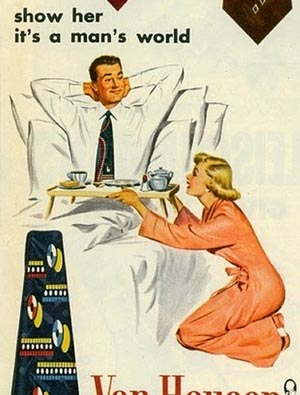

 Through the Clerk's tale, Chaucer epitomizes the consequences of a patriachial society. In contrast to the Wife's tale, the focus of the story is the meekness and willingness to submit of a woman, and how these were considered ideal characteristics.
In this story, it is considered acceptable for a man to abuse his wife, taking away the things she loves one at a time. Being wife to a marquis does not give her any power over this, and, forshadowing the events of the tale, she promises never to question this; that for all the pain he may cause, she "would not begrudge it night or day" (line 354). By the framework of the Wife's tale, even the most ideal woman of the time, such as the one the hag transforms into, shouldn't fall for this, as according to her, all women desire sovereignty above all else. To the Clerk, while of course the wife of the marquis doesn't like what is happening, everyone, including the wife, views the clear misogyny as acceptable and fair.